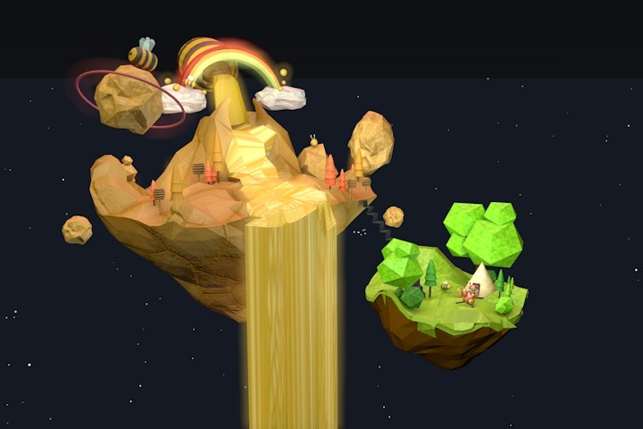
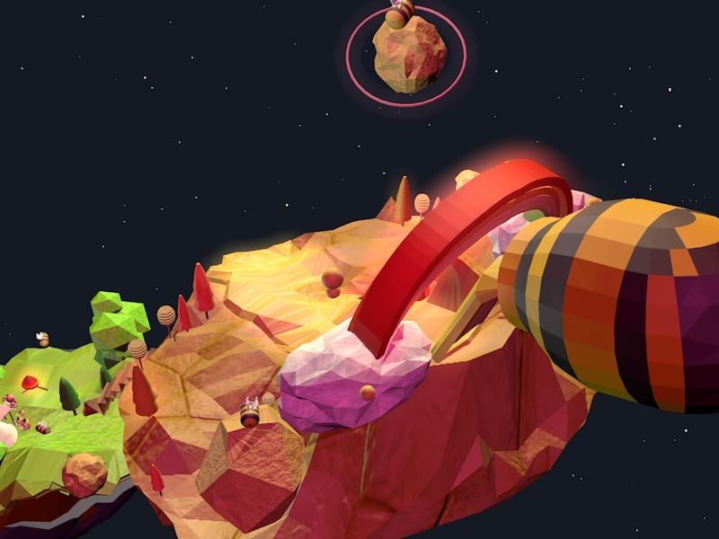
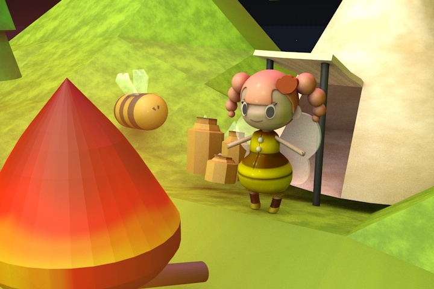

LOWPOLY ARTWORK

Cinema 4D MOVIE_ Lowpoly artwork
자신이 그동안 열심히 모은 꿀을 마을을 살리기 위해 쏟아 부었지만, 턱없이 부족한 양이었다.
어느 날 ‘니비’는 세상에서 가장 특별한 황금 벌꿀을 찾으면 마을을 위기로부터 구할 수 있다는
얘기를 듣고 황금 벌꿀을 찾기 위해 꿀벌 산맥으로 모험을 떠난다.
IMAGE CUT
 


큰 산맥에서 노란색 꿀이 폭포처럼 흘러 나오게 표현하며
거친 산맥처럼 보여주기 위해 울퉁불퉁하며 거친 텍스처를 사용했다.
폭포에 빛이나는 듯한 효과를 넣어 판타지적인 느낌이 들게 했다.